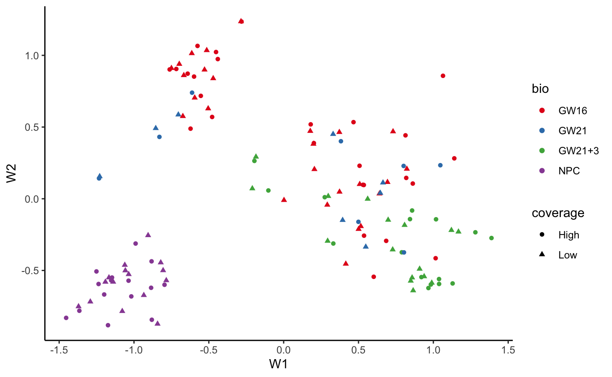
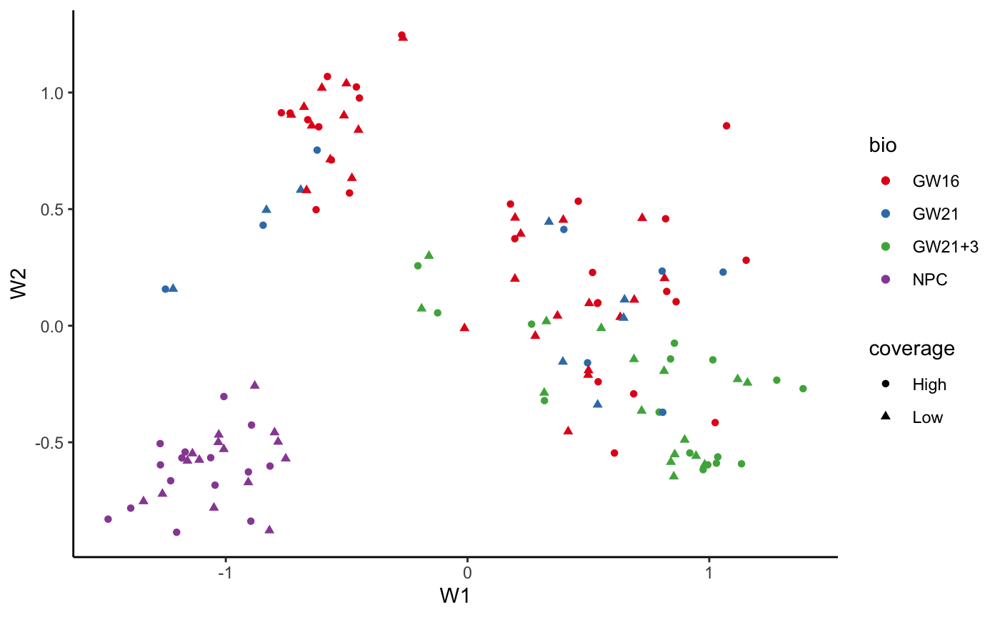
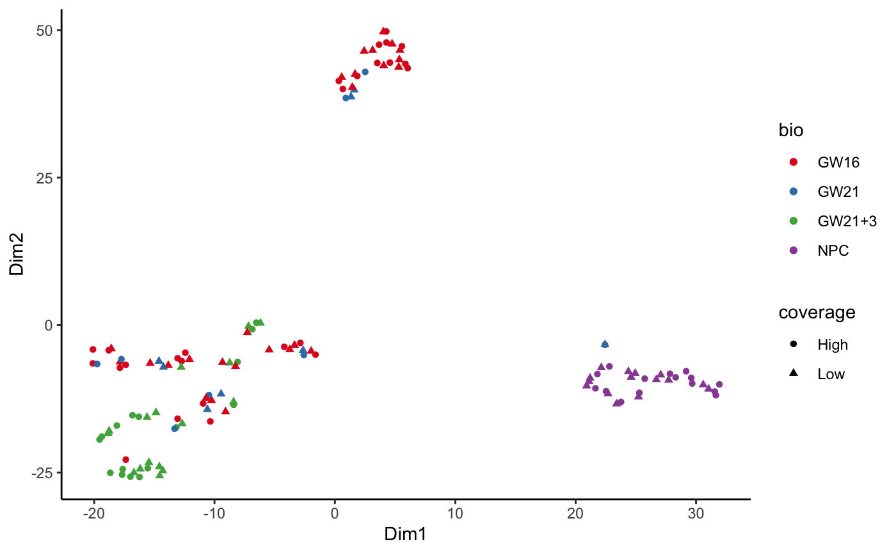
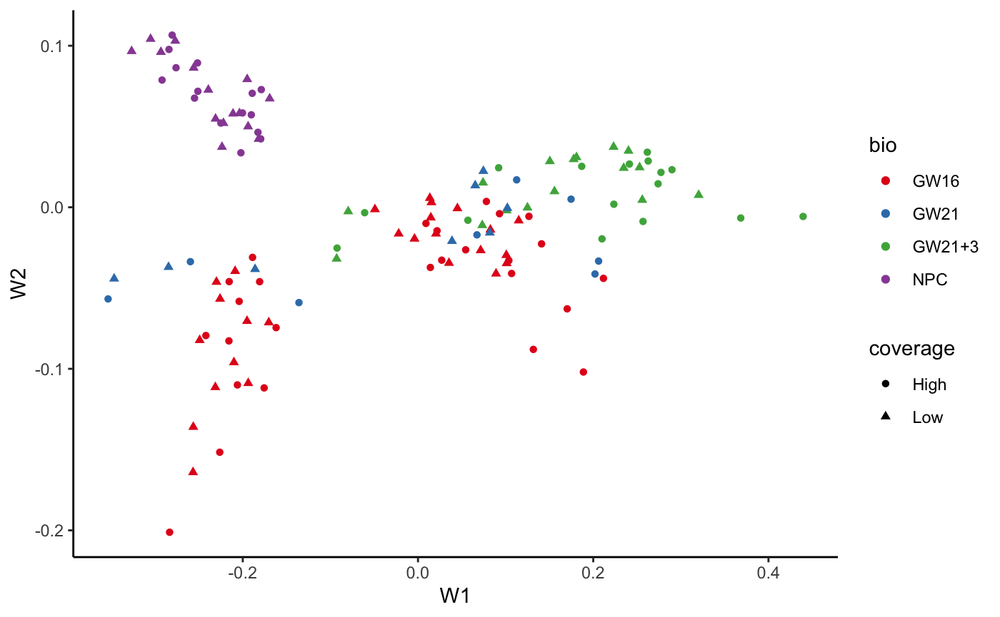

vignettes/intro.Rmd
intro.RmdThe recommended way to install the zinbwave package is
install.packages("BiocManager") BiocManager::install("zinbwave")
Note that zinbwave requires R (>=3.4) and Bioconductor (>=3.6).
This vignette provides an introductory example on how to work with the zinbwave package, which implements the ZINB-WaVE method proposed in (Risso et al. 2018).
First, let’s load the packages and set serial computations.
library(zinbwave) library(scRNAseq) library(matrixStats) library(magrittr) library(ggplot2) library(biomaRt) # Register BiocParallel Serial Execution BiocParallel::register(BiocParallel::SerialParam())
ZINB-WaVE is a general and flexible model for the analysis of high-dimensional zero-inflated count data, such as those recorded in single-cell RNA-seq assays. Given \(n\) samples (typically, \(n\) single cells) and \(J\) features (typically, \(J\) genes) that can be counted for each sample, we denote with \(Y_{ij}\) the count of feature \(j\) (\(j=1,\ldots,J\)) for sample \(i\) (\(i=1,\ldots,n\)). To account for various technical and biological effects, typical of single-cell sequencing technologies, we model \(Y_{ij}\) as a random variable following a zero-inflated negative binomial (ZINB) distribution with parameters \(\mu_{ij}\), \(\theta_{ij}\), and \(\pi_{ij}\), and consider the following regression models for the parameters:
\[\begin{align} \label{eq:model1} \ln(\mu_{ij}) &= \left( X\beta_\mu + (V\gamma_\mu)^\top + W\alpha_\mu + O_\mu\right)_{ij}\,,\\ \label{eq:model2} \text{logit}(\pi_{ij}) &= \left(X\beta_\pi + (V\gamma_\pi)^\top + W\alpha_\pi + O_\pi\right)_{ij} \,, \\ \label{eq:model3} \ln(\theta_{ij}) &= \zeta_j \,, \end{align}\].
where the elements of the regression models are as follows.
To illustrate the methodology, we will make use of the Fluidigm C1 dataset of (Pollen et al. 2014). The data consist of 65 cells, each sequenced at high and low depth. The data are publicly available as part of the scRNAseq package, in the form of a SummarizedExperiment object.
fluidigm <- ReprocessedFluidigmData(assays = "tophat_counts") fluidigm
## class: SingleCellExperiment
## dim: 26255 130
## metadata(3): sample_info clusters which_qc
## assays(1): tophat_counts
## rownames(26255): A1BG A1BG-AS1 ... ZZEF1 ZZZ3
## rowData names(0):
## colnames(130): SRR1275356 SRR1274090 ... SRR1275366 SRR1275261
## colData names(28): NREADS NALIGNED ... Cluster1 Cluster2
## reducedDimNames(0):
## altExpNames(0):table(colData(fluidigm)$Coverage_Type)
##
## High Low
## 65 65First, we filter out the lowly expressed genes, by removing those genes that do not have at least 5 reads in at least 5 samples.
## filter
## FALSE TRUE
## 16127 10128fluidigm <- fluidigm[filter,]
This leaves us with 10128 genes.
We next identify the 100 most variable genes, which will be the input of our ZINB-WaVE procedure. Although we apply ZINB-WaVE to only these genes primarily for computational reasons, it is generally a good idea to focus on a subset of highly-variable genes, in order to remove transcriptional noise and focus on the more biologically meaningful signals. However, at least 1,000 genes are probably needed for real analyses.
assay(fluidigm) %>% log1p %>% rowVars -> vars names(vars) <- rownames(fluidigm) vars <- sort(vars, decreasing = TRUE) head(vars)
## IGFBPL1 STMN2 EGR1 ANP32E CENPF LDHA
## 13.06109 12.24748 11.90608 11.67819 10.83797 10.72307fluidigm <- fluidigm[names(vars)[1:100],]
Before proceeding, we rename the first assay of fluidigm “counts” to avoid needing to specify which assay we should use for the zinbwave workflow. This is an optional step.
assayNames(fluidigm)[1] <- "counts"
The easiest way to obtain the low-dimensional representation of the data with ZINB-WaVE is to use the zinbwave function. This function takes as input a SummarizedExperiment object and returns a SingleCellExperiment object.
fluidigm_zinb <- zinbwave(fluidigm, K = 2, epsilon=1000)
By default, the zinbwave function fits a ZINB model with \(X = {\bf 1}_n\) and \(V = {\bf 1}_J\). In this case, the model is a factor model akin to principal component analysis (PCA), where \(W\) is a factor matrix and \(\alpha_\mu\) and \(\alpha_\pi\) are loading matrices. By default, the epsilon parameter is set to the number of genes. We empirically found that a high epsilon is often required to obtained a good low-level representation. See ?zinbModel for details. Here we set epsilon=1000.
The parameter \(K\) controls how many latent variables we want to infer from the data. \(W\) is stored in the reducedDim slot of the object. (See the SingleCellExperiment vignette for details).
In this case, as we specified \(K=2\), we can visualize the resulting \(W\) matrix in a simple plot, color-coded by cell-type.
W <- reducedDim(fluidigm_zinb) data.frame(W, bio=colData(fluidigm)$Biological_Condition, coverage=colData(fluidigm)$Coverage_Type) %>% ggplot(aes(W1, W2, colour=bio, shape=coverage)) + geom_point() + scale_color_brewer(type = "qual", palette = "Set1") + theme_classic()

The ZINB-WaVE model is more general than PCA, allowing the inclusion of additional sample and gene-level covariates that might help to infer the unknown factors.
Typically, one could include batch information as sample-level covariate, to account for batch effects. Here, we illustrate this capability by including the coverage (high or low) as a sample-level covariate.
The column Coverage_Type in the colData of fluidigm contains the coverage information. We can specify a design matrix that includes an intercept and an indicator variable for the coverage, by using the formula interface of zinbFit.
fluidigm_cov <- zinbwave(fluidigm, K=2, X="~Coverage_Type", epsilon=1000)
W <- reducedDim(fluidigm_cov) data.frame(W, bio=colData(fluidigm)$Biological_Condition, coverage=colData(fluidigm)$Coverage_Type) %>% ggplot(aes(W1, W2, colour=bio, shape=coverage)) + geom_point() + scale_color_brewer(type = "qual", palette = "Set1") + theme_classic()

In this case, the inferred \(W\) matrix is essentially the same with or without covariates, indicating that the scaling factor included in the model (the \(\gamma\) parameters associated with the intercept of \(V\)) are enough to achieve a good low-dimensional representation of the data.
Analogously, we can include gene-level covariates, as columns of \(V\). Here, we illustrate this capability by including gene length and GC-content.
We use the biomaRt package to compute gene length and GC-content.
mart <- useMart("ensembl") mart <- useDataset("hsapiens_gene_ensembl", mart = mart) bm <- getBM(attributes=c('hgnc_symbol', 'start_position', 'end_position', 'percentage_gene_gc_content'), filters = 'hgnc_symbol', values = rownames(fluidigm), mart = mart) bm$length <- bm$end_position - bm$start_position len <- tapply(bm$length, bm$hgnc_symbol, mean) len <- len[rownames(fluidigm)] gcc <- tapply(bm$percentage_gene_gc_content, bm$hgnc_symbol, mean) gcc <- gcc[rownames(fluidigm)]
We then include the gene-level information as rowData in the fluidigm object.
rowData(fluidigm) <- data.frame(gccontent = gcc, length = len)
fluidigm_gcc <- zinbwave(fluidigm, K=2, V="~gccontent + log(length)", epsilon=1000)
A t-SNE representation of the data can be obtained by computing the cell distances in the reduced space and running the t-SNE algorithm on the distance.
set.seed(93024) library(Rtsne) W <- reducedDim(fluidigm_cov) tsne_data <- Rtsne(W, pca = FALSE, perplexity=10, max_iter=5000) data.frame(Dim1=tsne_data$Y[,1], Dim2=tsne_data$Y[,2], bio=colData(fluidigm)$Biological_Condition, coverage=colData(fluidigm)$Coverage_Type) %>% ggplot(aes(Dim1, Dim2, colour=bio, shape=coverage)) + geom_point() + scale_color_brewer(type = "qual", palette = "Set1") + theme_classic()

Sometimes it is useful to have normalized values for visualization and residuals for model evaluation. Both quantities can be computed with the zinbwave() function.
fluidigm_norm <- zinbwave(fluidigm, K=2, epsilon=1000, normalizedValues=TRUE, residuals = TRUE)
The fluidigm_norm object includes normalized values and residuals as additional assays.
fluidigm_norm
## class: SingleCellExperiment
## dim: 100 130
## metadata(3): sample_info clusters which_qc
## assays(3): counts normalizedValues residuals
## rownames(100): IGFBPL1 STMN2 ... SRSF7 FAM117B
## rowData names(0):
## colnames(130): SRR1275356 SRR1274090 ... SRR1275366 SRR1275261
## colData names(28): NREADS NALIGNED ... Cluster1 Cluster2
## reducedDimNames(1): zinbwave
## altExpNames(0):zinbFit functionThe zinbwave function is a user-friendly function to obtain the low-dimensional representation of the data, and optionally the normalized values and residuals from the model.
However, it is sometimes useful to store all the parameter estimates and the value of the likelihood. The zinbFit function allows the user to create an object of class zinbModel that can be used to store all the parameter estimates and have greater control on the results.
zinb <- zinbFit(fluidigm, K=2, epsilon=1000)
As with zinbwave, by default, the zinbFit function fits a ZINB model with \(X = {\bf 1}_n\) and \(V = {\bf 1}_J\).
If a user has run zinbFit and wants to obtain normalized values or the low-dimensional representation of the data in a SingleCellExperiment format, they can pass the zinbModel object to zinbwave to avoid repeating all the computations.
Here, we also specify observationalWeights = TRUE to compute observational weights, useful for differential expression (see next section).
fluidigm_zinb <- zinbwave(fluidigm, fitted_model = zinb, K = 2, epsilon=1000, observationalWeights = TRUE)
The zinbwave package can be used to compute observational weights to “unlock” bulk RNA-seq tools for single-cell applications, as illustrated in (Van den Berge et al. 2018).
zinbwave optionally computes the observational weights when specifying observationalWeights = TRUE as in the code chuck above. See the man page of zinbwave. The weights are stored in an assay named weights and can be accessed with the following call.
weights <- assay(fluidigm_zinb, "weights")
Note that in this example, the value of the penalty parameter epsilon was set at 1000, although we do not recommend this for differential expression analysis in real applications. Our evaluations have shown that a value of epsilon=1e12 gives good performance across a range of datasets, although this number is still arbitrary. In general, values between 1e6 and 1e13 give best performances.
Once we have the observational weights, we can use them in edgeR to perform differential expression. Specifically, we use a moderated F-test in which the denominator residual degrees of freedom are adjusted by the extent of zero inflation (see (Van den Berge et al. 2018) for details).
Here, we compare NPC to GW16. Note that we start from only 100 genes for computational reasons, but in real analyses we would use all the expressed genes.
library(edgeR) dge <- DGEList(assay(fluidigm_zinb)) dge <- calcNormFactors(dge) design <- model.matrix(~Biological_Condition, data = colData(fluidigm)) dge$weights <- weights dge <- estimateDisp(dge, design) fit <- glmFit(dge, design) lrt <- glmWeightedF(fit, coef = 3) topTags(lrt)
## Coefficient: Biological_ConditionGW21+3
## logFC logCPM LR PValue padjFilter FDR
## VIM -4.768899 13.21736 47.44397 2.372950e-10 2.372950e-08 2.372950e-08
## FOS -5.314329 14.50176 37.39308 8.937165e-09 4.468582e-07 4.468582e-07
## USP47 -3.900577 13.37158 29.91782 2.217492e-07 7.391640e-06 7.391640e-06
## PTN -3.190168 13.22778 22.68392 4.691804e-06 1.172951e-04 1.172951e-04
## MIR100HG 2.388532 14.26683 18.25782 3.515256e-05 6.633079e-04 6.633079e-04
## NNAT -2.062983 13.60868 17.90556 3.979848e-05 6.633079e-04 6.633079e-04
## SPARC -3.202996 13.23879 16.08233 1.047878e-04 1.496968e-03 1.496968e-03
## SFRP1 -3.405951 13.01425 14.45825 2.439136e-04 3.048919e-03 3.048919e-03
## EGR1 -2.658644 14.93922 13.58180 3.193080e-04 3.547867e-03 3.547867e-03
## ST8SIA1 -3.338408 13.35883 12.64069 5.337675e-04 5.337675e-03 5.337675e-03Analogously, we can use the weights in a DESeq2 analysis by using observation-level weights in the parameter estimation steps. In this case, there is no need to pass the weights to DESeq2 since they are already in the weights assay of the object.
library(DESeq2) dds <- DESeqDataSet(fluidigm_zinb, design = ~ Biological_Condition) dds <- DESeq(dds, sfType="poscounts", useT=TRUE, minmu=1e-6) res <- lfcShrink(dds, contrast=c("Biological_Condition", "NPC", "GW16"), type = "normal") head(res)
## log2 fold change (MAP): Biological_Condition NPC vs GW16
## Wald test p-value: Biological Condition NPC vs GW16
## DataFrame with 6 rows and 6 columns
## baseMean log2FoldChange lfcSE stat pvalue padj
## <numeric> <numeric> <numeric> <numeric> <numeric> <numeric>
## IGFBPL1 2054.403 -8.29483 0.705618 -8.14346 3.84143e-16 2.02181e-15
## STMN2 2220.078 -10.07429 0.769583 -9.37588 6.86037e-21 5.27721e-20
## EGR1 1342.465 -6.85394 0.662687 -10.34378 2.31566e-18 1.44729e-17
## ANP32E 806.983 1.99091 0.502374 3.96658 1.30782e-04 2.97232e-04
## CENPF 255.632 1.37109 0.553764 3.04964 3.19077e-03 5.80141e-03
## LDHA 311.760 2.36716 0.578059 4.91242 4.25408e-06 1.11170e-05Note that DESeq2’s default normalization procedure is based on geometric means of counts, which are zero for genes with at least one zero count. This greatly limits the number of genes that can be used for normalization in scRNA-seq applications. We therefore use the normalization method suggested in the phyloseq package, which calculates the geometric mean for a gene by only using its positive counts, so that genes with zero counts could still be used for normalization purposes. The phyloseq normalization procedure can be applied by setting the argument type equal to poscounts in DESeq.
For UMI data, for which the expected counts may be very low, the likelihood ratio test implemented in nbinomLRT should be used. For other protocols (i.e., non-UMI), the Wald test in nbinomWaldTest can be used, with null distribution a t-distribution with degrees of freedom corrected by the observational weights. In both cases, we recommend the minimum expected count to be set to a small value (e.g., minmu=1e-6).
zinbwave with SeuratThe factors inferred in the zinbwave model can be added as one of the low dimensional data representations in the Seurat object, for instance to find subpopulations using Seurat’s cluster analysis method.
We first need to convert the SingleCellExperiment object into a Seurat object, using Seurat’s CreateSeuratObject function.
Note that the following workflow has been tested with Seurat’s version 3.0.0.
Here we create a simple Seurat object with the raw data. Please, refer to the Seurat’s vignettes for a typical analysis, which includes filtering, normalization, etc.
Note that our zinbwave factors are automatically in the Seurat object.
seu
## An object of class Seurat
## 100 features across 130 samples within 1 assay
## Active assay: RNA (100 features, 0 variable features)
## 1 dimensional reduction calculated: zinbwaveFinally, we can use the zinbwave factors for cluster analysis.
seu <- FindNeighbors(seu, reduction = "zinbwave", dims = 1:2 #this should match K ) seu <- FindClusters(object = seu)
## Modularity Optimizer version 1.3.0 by Ludo Waltman and Nees Jan van Eck
##
## Number of nodes: 130
## Number of edges: 2461
##
## Running Louvain algorithm...
## Maximum modularity in 10 random starts: 0.7213
## Number of communities: 4
## Elapsed time: 0 secondsWhen working with large datasets, zinbwave can be computationally demanding. We provide an approximate strategy, implemented in the zinbsurf function, that uses only a random subset of the cells to infer the low dimensional space and subsequently projects all the cells into the inferred space.
fluidigm_surf <- zinbsurf(fluidigm, K = 2, epsilon = 1000, prop_fit = 0.5) W2 <- reducedDim(fluidigm_surf) data.frame(W2, bio=colData(fluidigm)$Biological_Condition, coverage=colData(fluidigm)$Coverage_Type) %>% ggplot(aes(W1, W2, colour=bio, shape=coverage)) + geom_point() + scale_color_brewer(type = "qual", palette = "Set1") + theme_classic()

Note that here we use 50% of the data to get a reasonable approximation, since we start with only 130 cells. We found that for datasets with tens of thousands of cells, 10% (the default value) is usally a reasonable choice.
Note that this is an experimental feature and has not been thoroughly tested. Use at your own risk!
The zinbwave package uses the BiocParallel package to allow for parallel computing. Here, we used the register command to ensure that the vignette runs with serial computations.
However, in real datasets, parallel computations can speed up the computations dramatically, in the presence of many genes and/or many cells.
There are two ways of allowing parallel computations in zinbwave. The first is to register() a parallel back-end (see ?BiocParallel::register for details). Alternatively, one can pass a BPPARAM object to zinbwave and zinbFit, e.g.
library(BiocParallel) zinb_res <- zinbwave(fluidigm, K=2, BPPARAM=MulticoreParam(2))
We found that MulticoreParam() may have some performance issues on Mac; hence, we recommend DoparParam() when working on Mac.
## R version 4.0.2 (2020-06-22)
## Platform: x86_64-apple-darwin17.0 (64-bit)
## Running under: macOS Catalina 10.15.5
##
## Matrix products: default
## BLAS: /Library/Frameworks/R.framework/Versions/4.0/Resources/lib/libRblas.dylib
## LAPACK: /Library/Frameworks/R.framework/Versions/4.0/Resources/lib/libRlapack.dylib
##
## locale:
## [1] en_US.UTF-8/en_US.UTF-8/en_US.UTF-8/C/en_US.UTF-8/en_US.UTF-8
##
## attached base packages:
## [1] parallel stats4 stats graphics grDevices utils datasets
## [8] methods base
##
## other attached packages:
## [1] Seurat_3.1.5 DESeq2_1.29.6
## [3] edgeR_3.31.4 limma_3.45.7
## [5] Rtsne_0.15 biomaRt_2.45.2
## [7] ggplot2_3.3.2 magrittr_1.5
## [9] scRNAseq_2.3.9 zinbwave_1.11.4
## [11] SingleCellExperiment_1.11.6 SummarizedExperiment_1.19.5
## [13] DelayedArray_0.15.6 matrixStats_0.56.0
## [15] Matrix_1.2-18 Biobase_2.49.0
## [17] GenomicRanges_1.41.5 GenomeInfoDb_1.25.8
## [19] IRanges_2.23.10 S4Vectors_0.27.12
## [21] BiocGenerics_0.35.4 BiocStyle_2.17.0
##
## loaded via a namespace (and not attached):
## [1] backports_1.1.8 AnnotationHub_2.21.1
## [3] BiocFileCache_1.13.0 plyr_1.8.6
## [5] igraph_1.2.5 lazyeval_0.2.2
## [7] splines_4.0.2 BiocParallel_1.23.2
## [9] listenv_0.8.0 digest_0.6.25
## [11] htmltools_0.5.0 memoise_1.1.0
## [13] cluster_2.1.0 ROCR_1.0-11
## [15] globals_0.12.5 annotate_1.67.0
## [17] askpass_1.1 pkgdown_1.5.1.9000
## [19] prettyunits_1.1.1 colorspace_1.4-1
## [21] blob_1.2.1 rappdirs_0.3.1
## [23] ggrepel_0.8.2 xfun_0.15
## [25] dplyr_1.0.0 crayon_1.3.4
## [27] RCurl_1.98-1.2 jsonlite_1.7.0
## [29] genefilter_1.71.0 survival_3.1-12
## [31] zoo_1.8-8 ape_5.4
## [33] glue_1.4.1 gtable_0.3.0
## [35] zlibbioc_1.35.0 XVector_0.29.3
## [37] leiden_0.3.3 future.apply_1.6.0
## [39] scales_1.1.1 DBI_1.1.0
## [41] Rcpp_1.0.5 viridisLite_0.3.0
## [43] xtable_1.8-4 progress_1.2.2
## [45] reticulate_1.16 rsvd_1.0.3
## [47] bit_1.1-15.2 tsne_0.1-3
## [49] htmlwidgets_1.5.1 httr_1.4.1
## [51] RColorBrewer_1.1-2 ellipsis_0.3.1
## [53] ica_1.0-2 pkgconfig_2.0.3
## [55] XML_3.99-0.4 farver_2.0.3
## [57] uwot_0.1.8 dbplyr_1.4.4
## [59] locfit_1.5-9.4 reshape2_1.4.4
## [61] tidyselect_1.1.0 labeling_0.3
## [63] rlang_0.4.6 softImpute_1.4
## [65] later_1.1.0.1 AnnotationDbi_1.51.1
## [67] munsell_0.5.0 BiocVersion_3.12.0
## [69] tools_4.0.2 generics_0.0.2
## [71] RSQLite_2.2.0 ExperimentHub_1.15.0
## [73] ggridges_0.5.2 evaluate_0.14
## [75] stringr_1.4.0 fastmap_1.0.1
## [77] yaml_2.2.1 knitr_1.29
## [79] bit64_0.9-7 fs_1.4.2
## [81] fitdistrplus_1.1-1 purrr_0.3.4
## [83] RANN_2.6.1 pbapply_1.4-2
## [85] future_1.17.0 nlme_3.1-148
## [87] mime_0.9 compiler_4.0.2
## [89] png_0.1-7 plotly_4.9.2.1
## [91] curl_4.3 interactiveDisplayBase_1.27.5
## [93] tibble_3.0.2 geneplotter_1.67.0
## [95] stringi_1.4.6 desc_1.2.0
## [97] lattice_0.20-41 vctrs_0.3.1
## [99] pillar_1.4.4 lifecycle_0.2.0
## [101] BiocManager_1.30.10 lmtest_0.9-37
## [103] RcppAnnoy_0.0.16 data.table_1.12.8
## [105] cowplot_1.0.0 bitops_1.0-6
## [107] irlba_2.3.3 httpuv_1.5.4
## [109] patchwork_1.0.1 R6_2.4.1
## [111] bookdown_0.20 promises_1.1.1
## [113] gridExtra_2.3 KernSmooth_2.23-17
## [115] codetools_0.2-16 MASS_7.3-51.6
## [117] assertthat_0.2.1 openssl_1.4.2
## [119] rprojroot_1.3-2 withr_2.2.0
## [121] sctransform_0.2.1 GenomeInfoDbData_1.2.3
## [123] hms_0.5.3 grid_4.0.2
## [125] tidyr_1.1.0 rmarkdown_2.3.2
## [127] shiny_1.5.0Pollen, Alex A, Tomasz J Nowakowski, Joe Shuga, Xiaohui Wang, Anne A Leyrat, Jan H Lui, Nianzhen Li, et al. 2014. “Low-coverage single-cell mRNA sequencing reveals cellular heterogeneity and activated signaling pathways in developing cerebral cortex.” Nature Biotechnology 32 (10): 1053–8.
Risso, D, F Perraudeau, S Gribkova, S Dudoit, and Vert JP. 2018. “A General and Flexible Method for Signal Extraction from Single-Cell RNA-Seq Data.” Nature Communications 9: 284.
Van den Berge, Koen, Fanny Perraudeau, Charlotte Soneson, Michael I Love, Davide Risso, Jean-Philippe Vert, Mark D Robinson, Sandrine Dudoit, and Lieven Clement. 2018. “Observation Weights to Unlock Bulk Rna-Seq Tools for Zero Inflation and Single-Cell Applications.” bioRxiv, 250126.